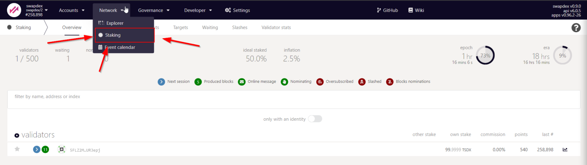
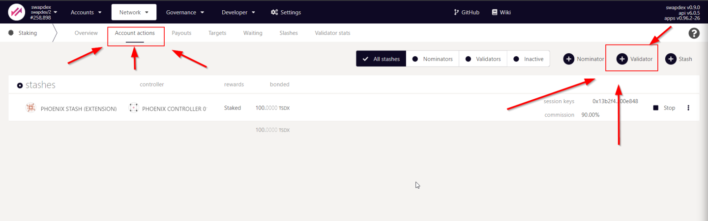
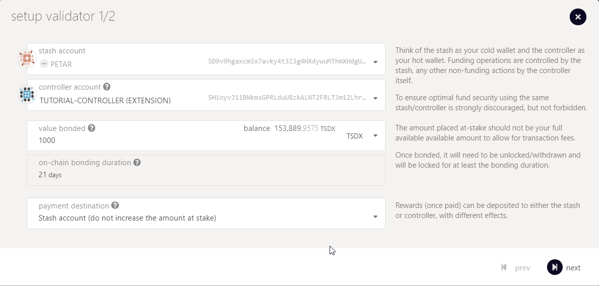

BECOME A VALIDATOR
The following guide will teach you how to set up a Testnet Validator. The process of becoming a validator requires two steps.
- The first step is to set up a network node.
- The second step is to assign your node to your account and apply for validator candidacy.
Network validators are the foundation of a decentralized proof-of-stake network because they are responsible for concluding on a consensus by creating new and validating already produced blocks. That said, network validators are the prime target for adversaries that aim to sabotage the network. The Kusari has many layers to protect the network from attacks. The first layer is the security of each validator itself. Another layer is the slashing mechanism that detects validator nodes that display abnormal or dangerous behavior and punishes them with slashes. A slash will, in all cases, lead to the loss of funds.
Warning
Hence the warning: Running a validator on a live network is a lot of responsibility! You will be accountable for your stake and the stake of your current nominators. If you make a mistake and get slashed, your money and your reputation will be at risk. However, running a validator can also be very rewarding, knowing that you contribute to the security of a decentralized network while growing your stash.
THE PROCESS
- Create two substrate accounts
- Create Stash Account
- Create Controller Account
- Request Funding
- Prepare your VPS
- Update
- Install Chrony
- (Security Measures)
- Install Docker
- Download Docker
- Run Docker
- Apply for Validator Slot on Testnet Explorer
- Generate Sessions Keys on your VPS
- Use Session Keys to finish application
- Wait one era
CREATE TWO SUBSTRATE ACCOUNTS
Since Polkadot and the SwapDex Testnet share the same foundation, namely Substrate, the Polkadot{.js} browser extension is the recommended way to create substrate based accounts. Pokadot.js is very comparable with Meta Mask for Ethereum especially in terms of usability, security and functionality.
Tip
 Download Pokadot.js browser extension
Download Pokadot.js browser extension
We will create two accounts:
- A stash account
- A controller account
The Stash account is where you will keep all the coins (TSDX) you want to stake. The Controller account is used to control actions related to your staking e.g. nominating and validator ops.
You may ask yourself why do we need two or multiple accounts? And the aswer is simple: To improve security and avoid risks.
Here is how:
Your Stash account will have most of your coins and the power to move them. Your Controller account will have other useful powers, like nominating validators. But your Controller account cant move your coins out of the Stash account. The advantage of this is that you barely will need to touch your Stash account after you bonded and selected your Controller account. Therefore you can put it in cold storage for instance. In turn you will use your Controller account frequently to interact with the network and thus expose the Controller to more visibility and more risk. If something happens to your Controller you may create a new one and select the new one from your Stash account.

Hint
In this guide we will use the browser extension to create both accounts.
Step 1: Open the Polkadot{.js} browser extension by clicking the logo on the top bar of your browser. You will see a browser popup, not unlike the one below.

Step 2: Click the big plus button or select "Create new account" from the small plus icon in the top right. The Polkadot{.js} plugin will then use system randomness to make a new seed for you and display it to you in the form of twelve words.

Step 3: You should back up these words as explained above. It is imperative to store the seed somewhere safe, secret, and secure. If you cannot access your account via Polkadot{.js} for some reason, you can re-enter your seed through the "Add account menu" by selecting "Import account from pre-existing seed".

Step 4: Name your Account
The account name is arbitrary and for your use only. It is not stored on the blockchain and will not be visible to other users who look at your address via a block explorer. If you're juggling multiple accounts, it helps to make this as descriptive and detailed as needed.
Step 5: Enter Password
You will use the password to encrypt this account's information. You will need to re-enter it when using the account for all outgoing transactions or sign a cryptographic message.
Warning
Note that this password does NOT protect your seed phrase. If someone knows the twelve words in your mnemonic seed, they still control your account even if they do not know the password.
Hint
Repeat this process until you have created two accounts
Request funding
Copy the address of the account which you like to become your stash account and post it in our polkadot-wallet-addresses channel. Our admins will send you some funds to that you can apply for validator candidacy or use it for nomination (aka staking). Once you recevied your coins, please transfer a small amount to your controller account, since it needs some coins to cover for the transaction fees.
TECHNICAL NODE SETUP
Now that we have the stash and controller account ready and funded let's start with the fun part 
Requirements
You can operate a network node on a local computer, a professional server-rig in your basement, or on a remotely hosted virtual private server (VPS) in the clouds. It's up to you to choose the infrastructure you feel most comfortable with. What doesn't change are the requirements of a network node that operates as a validator. Validators should always be online and powerful enough to create and validate the authoring process of new blocks. If your validator is failing at one of these requirements, it will get punished by slashes.
Tip
The most common way for a beginner to run a validator is on a VPS running Linux. You may choose whatever VPS providers that you prefer.
We benchmarked the transactions weights on the Kusari network on standard hardware. We recommend that validators run at least the standard hardware to ensure they can process all blocks in time. The following are not minimum requirements, but if you decide to run with less than this, beware that you might have a performance issue.
Lower-end Hardware :
- 6GB ram, 60 GB Storage, 2 CPU , stable server uplink connection with fixed IP
Ideal Hardware :
- 16GB ram, 300 GB Storage, 6 CPU, stable server uplink connection with fixed IP
Info
Anything between the lower-end and ideal hardware should be sufficient to run a validator on the testnet.
Software Setup
Tip
This guide is for the Ubuntu 21.04 OS
Hint
Some of the following commands will ask you to confirm the installation. Just hit Y
This is a list of all commands you need to execute step-by-step to setup the testnet node and start the sync process
sudo apt-get update # (1)
sudo apt-get install ntp
sudo apt install chrony
sudo systemctl enable chrony
curl -fsSL https://get.docker.com -o get-docker.sh && sh get-docker.sh
docker run -d -p 8545:8545 --restart always starkleytech/swapdex:0.0.1 swapdex --port "30333" --name "Swapdex 1" --validator --chain phoenix --rpc-port=8545 --rpc-cors all --rpc-methods unsafe --ws-external --rpc-external
Command Explaination
sudo apt-get updatewill update your server (very important)sudo apt-get install ntpInstallation of the Network Time Protocol Client. We currently require that the clocks of all validators on the network stay reasonably in sync. The NTP client is a piece of software that allows you to synchronize your server's clock with the clocks of the remaining servers connected to the blockchain.
Info
If you are using Ubuntu 18.04 / 19.04 / 20.04, NTP Client should be installed by default. You can check if your server is already running NTP by executing the following command:
timedatectl
-
sudo apt install chronyWe learned in the previous step that the new versions of Ubunutu ship the NTP client by default. However, Chrony is another time sync tool that delivers better and more stable performance. Therefore, we recommend installing and enabling Chrony on top of the NTP client to ensure synchronized clocks and uninterrupted validator operations. -
curl -fsSL https://get.docker.com -o get-docker.sh && sh get-docker.shdownload and installation of the node docker. Docker is a tool that deliver software in containers. Containers are isolated from one another and bundle their own software, libraries and configuration files. -
docker run ...Runs the container that contains the testnet node. Notice that you can change the--nameflag to give your node a customized name on your local machine. This name will not be seen publicly. In fact, you can change your validators public name (identity) at anytime.
Check if your node syncs
To check if your nodes runs properly we should check the logs. To access the logs we need the container ID. To get the container ID execute the following command:
docker ps
CONTAINER ID IMAGE COMMAND CREATED STATUS PORTS NAMES
1130a337f8e4 starkleytech/swapdex:0.0.1 "swapdex --port 3033…" 2 hours ago Up 2 hours 0.0.0.0:8545->8545/tcp, :::8545->8545/tcp, 9933/tcp, 9944/tcp, 0.0.0.0:9615->9615/tcp,
Print Logs (one time)
sudo docker logs [CONTAINER ID]
sudo docker logs --follow CONTAINER ID
2021-10-23 19:43:27 swapdex
2021-10-23 19:43:27 ✌️ version 0.9.0-619c7b1-x86_64-linux-gnu
2021-10-23 19:43:27 ❤️ by Starkley Tech <https://github.com/starkleytech>, 2017-2021
2021-10-23 19:43:27 📋 Chain specification: swapdex
2021-10-23 19:43:27 🏷 Node name: Swapdex 1
2021-10-23 19:43:27 👤 Role: AUTHORITY
2021-10-23 19:43:27 💾 Database: RocksDb at /swapdex/.local/share/swapdex/chains/swapdex/db
2021-10-23 19:43:27 ⛓ Native runtime: swapdex-1 (swapdex-0.tx2.au0)
2021-10-23 19:43:28 💸 new validator set of size 1 has been elected via ElectionCompute::OnChain for era 0
2021-10-23 19:43:28 🔨 Initializing Genesis block/state (state: 0xc8aa…bef2, header-hash: 0xb504…30d3)
2021-10-23 19:43:28 👴 Loading GRANDPA authority set from genesis on what appears to be first startup.
2021-10-23 19:43:28 ⏱ Loaded block-time = 6000 milliseconds from genesis on first-launch
2021-10-23 19:43:28 👶 Creating empty BABE epoch changes on what appears to be first startup.
2021-10-23 19:43:28 🏷 Local node identity is: 12D3KooWESEnUGF72TmS6cLGFkHxdJ76A38cxytV4GrTBqnziSDP
2021-10-23 19:43:28 📦 Highest known block at #0
2021-10-23 19:43:28 〽️ Prometheus server started at 127.0.0.1:9615
2021-10-23 19:43:28 start sync genesis block
2021-10-23 19:43:28 Listening for new connections on 0.0.0.0:9944.
2021-10-23 19:43:28 👶 Starting BABE Authorship worker
2021-10-23 19:43:29 🔍 Discovered new external address for our node: /ip4/35.198.153.172/tcp/30333/p2p/12D3KooWESEnUGF72TmS6cLGFkHxdJ76A38cxytV4GrTBqnziSDP
2021-10-23 19:43:33 ⚙️ Syncing, target=#258844 (2 peers), best: #3101 (0x8432…71ae), finalized #3072 (0x6cbe…5e50), ⬇ 399.6kiB/s ⬆ 3.0kiB/s
2021-10-23 21:22:38 💤 Idle (2 peers), best: #256478 (0x8cd9…9db1), finalized #256000 (0x5a41…da41), ⬇ 27.1kiB/s ⬆ 0.2kiB/s
2021-10-23 21:22:43 💤 Idle (2 peers), best: #256675 (0x7f15…d48c), finalized #256512 (0xbfbb…8f44), ⬇ 0 ⬆ 0
2021-10-23 21:22:48 💤 Idle (2 peers), best: #256875 (0x50d8…17e0), finalized #256512 (0xbfbb…8f44), ⬇ 24 B/s ⬆ 24 B/s
2021-10-23 21:22:53 💤 Idle (2 peers), best: #257074 (0xe59a…dd93), finalized #257024 (0x8e5b…a2d2), ⬇ 57 B/s ⬆ 85 B/s
2021-10-23 21:22:58 💤 Idle (2 peers), best: #257256 (0x189d…3701), finalized #257024 (0x8e5b…a2d2), ⬇ 0 ⬆ 21 B/s
2021-10-26 03:40:12 🙌 Starting consensus session on top of parent 0x1e2452e4008501b97eed694228122e5ba0ecc0c57143153e339fa501c7477389
2021-10-26 03:40:12 🎁 Prepared block for proposing at 276520 [hash: 0xe4ea94059323bb2191db544a08c3a13abb4e88ec00d8c96a7e6490213b299f9c; parent_hash: 0x1e24…7389; extrinsics (1): [0xb659…0a7b]]
2021-10-26 03:40:12 🔖 Pre-sealed block for proposal at 276520. Hash now 0x3b2ea768c8a13503e44cb639ecc7347ec14c93377d351c6c948c70d748ad4347, previously 0xe4ea94059323bb2191db544a08c3a13abb4e88ec00d8c96a7e6490213b299f9c.
2021-10-26 03:40:12 ✨ Imported #276520 (0x3b2e…4347)
2021-10-26 03:40:12 ✨ Imported #276520 (0x3d83…516d)
2021-10-26 03:40:12 ✨ Imported #276520 (0xc5d7…ddf3)
2021-10-26 03:40:16 💤 Idle (2 peers), best: #276520 (0x3b2e…4347), finalized #276517 (0x84f6…f703), ⬇ 0.5kiB/s ⬆ 0.6kiB/s
Hint
To exit the continious log mode hit: Ctrl+C
Generate Session Keys
Session keys are needed to associate your node with your controller account. To generate the session keys you can run the following command on your machine:
curl -H "Content-Type: application/json" -d '{"id":1, "jsonrpc":"2.0", "method": "author_rotateKeys", "params":[]}' http://localhost:8545
The output will have a hex-encoded "result" field. The result is the concatenation of the four public keys. Save this result for a later step. Copy the session key. It will look like this:
0x13660593581b2e728ee32122636f8996c6fd9c22f33beaa05e2797899c5458b0c888149bf3c0b5ca7fb7296e69fefd85e4e3d5b76848db890207575e49031f37d846e78babf8051c123b498ffe6f12e712f97f6b2f3b54345ffe51145a16bb22187d415c2101b9883668ce93c46f7ba556b394c59781854737b6c941747c0964
Hint
Session keys can be generated as often as you like without any downlside for the system or the network. Just make sure that the latest generated session key matches with the session key you put into the substrate testnet explorer.
APPLY ON TESTNET EXPLORER
- Visit the substrate testnet explorer
-
Go to the Network Tab -> Staking -> Account Actions (Link) 
-
Hit the
+ ValidatorButton  -
Fill in the form 
-
Stash account - Select your Stash account. In this example, we will bond 1000 TSDX, where the minimum bonding amount is 1. Make sure that your Stash account contains at least this much. You can, of course, stake more than this.
- Controller account - Select the Controller account created earlier. This account will also need a small amount of TSDX in order to start and stop validating.
- Value bonded - How much TSDX from the Stash account you want to bond/stake. Note that you do not need to bond all of the TSDX in that account. Also note that you can always bond more TSDX later. However, withdrawing any bonded amount requires the duration of the unbonding period.
- Payment destination - The account where the rewards from validating are sent. Payouts can go to any custom address. If you'd like to redirect payments to an account that is neither the controller nor the stash account, set one up. Note that it is extremely unsafe to set an exchange address as the recipient of the staking rewards.
- Paste the session key

Here you will need to input the Sesssion Keys, which is the Hex output from the command we executed earlier. The keys will show as pending until applied at the start of a new session.
The "reward commission percentage" is the commission percentage that you can declare against your validator's rewards. This is the rate that your validator will be commissioned with.
!!! Note: setting a commission rate of 100% suggests that you do not want your validator to receive nominations.
You can also determine if you would like to receive nominations with the "allows new nominations" option.
-
Hit bond & validate
-
Visit the Waiting Tab to see your validator waiting until the era finishes
Success
Congrats! You are now running a Testnet Validator
OPTIONAL SECURITY MEASURES
We recommend to install a firewall and fail2ban
sudo ufw allow 22
sudo ufw allow 30333
sudo ufw allow 8545
sudo ufw enable
sudo apt install -y fail2ban && sudo systemctl enable fail2ban && sudo service fail2ban start